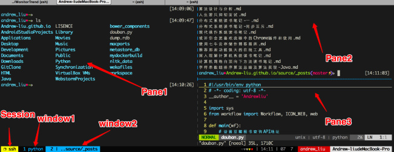

tmux介绍和使用
tmux介绍
tmux是一个终端复用程序，采用C/S架构模型，最有用的使用场景是我们使用ssh连接到服务器进行工作时，如果我们想要暂时离开我们的工作，并且想要保存我们的工作现场以便以后能够继续，我们就可以在tmux里面进行工作，然后想要暂停工作后就detach回话，以后想要继续工作直接attach到我们以前的工作回话即可。当网络环境不稳定的时候，我们的ssh链接很可能非正常中断，这时候如果我们使用的是普通的ssh工作环境，我们的工作就会被丢弃掉，但是使用tmux就可以恢复并继续工作。
tmux的编译安装
建议安装最新版本的tmux，享受最新的tmux性能和使用便捷性。安装最新的tmux需要以下几步：
- 下载最新发布的tarball.
- 使用tar命令解压缩；
进入解压缩文件夹，执行以下命令：
1
2./configure && make
sudo make install如果出现找不到libevent的错误，ubuntu16.04直接apt安装libevent-dev包再编译安装即可。
tmux的github页面还介绍了另外一种安装方法，但是没有尝试过。
tmux的几个概念
- Server：tmux是基于C/S架构的，也就是我们的工作需要有Server，然后Client通过Session和Server进行通信和工作;
- Session：一个Server可以包含多个Session；
- Window：一个Session可以包含多个Window；
- Pane：一个Window可以包含多个Pane。
注意，我们可以对一个Session同时attach多次，attach到同一个Session后输入和显示是完全一模一样的，这就可以用于给别人进行演示操作了。

tmux的简单使用
新建Session
直接在终端执行tmux可以启动一个默认以数字命名的Session，但是通常我们可能需要给我们的Session命名，这样便于我们进行后期的attach：1
tmux new -s session_name
attach到已有的Session
1 | tmux a # 默认进入第一个会话 |
detach所在Session
有两种方式：
- 快捷键
Ctrl+b,释放后按d即可； - 执行命令
tmux detach。
查看存在的Session
1 | tmux ls |
关闭Session
关闭Session后，工作现场内容会丢失，但是会释放相关的资源：1
2tmux kill-session -t demo # 关闭demo会话
tmux kill-server # 关闭服务器，所有的会话都将关闭
tmux的快捷键
tmux的快捷键遵循prefix+功能按键的模式，这个不常见。也就是我们在使用快捷键之前需要使用prefix按键告诉tmux我们要使用快捷键了，默认的prefix按键是CTRL+b,要使用快捷键，比如我们要水平分屏，那么我们应该先按CTRL+b,释放按键后按%即可（切记要释放按键后再按%）.
常用快捷键
表一：系统指令。
| 前缀 | 指令 | 描述 |
|---|---|---|
Ctrl+b |
? |
显示快捷键帮助文档 |
Ctrl+b |
d |
断开当前会话 |
Ctrl+b |
D |
选择要断开的会话 |
Ctrl+b |
Ctrl+z |
挂起当前会话 |
Ctrl+b |
r |
强制重载当前会话 |
Ctrl+b |
s |
显示会话列表用于选择并切换 |
Ctrl+b |
: |
进入命令行模式，此时可直接输入ls等命令 |
Ctrl+b |
[ |
进入复制模式，按q退出 |
Ctrl+b |
] |
粘贴复制模式中复制的文本 |
Ctrl+b |
~ |
列出提示信息缓存 |
表二：窗口（window）指令。
| 前缀 | 指令 | 描述 |
|---|---|---|
Ctrl+b |
c |
新建窗口 |
Ctrl+b |
& |
关闭当前窗口（关闭前需输入y or n确认） |
Ctrl+b |
0~9 |
切换到指定窗口 |
Ctrl+b |
p |
切换到上一窗口 |
Ctrl+b |
n |
切换到下一窗口 |
Ctrl+b |
w |
打开窗口列表，用于且切换窗口 |
Ctrl+b |
, |
重命名当前窗口 |
Ctrl+b |
. |
修改当前窗口编号（适用于窗口重新排序） |
Ctrl+b |
f |
快速定位到窗口（输入关键字匹配窗口名称） |
表三：面板（pane）指令。
| 前缀 | 指令 | 描述 |
|---|---|---|
Ctrl+b |
" |
当前面板上下一分为二，下侧新建面板 |
Ctrl+b |
% |
当前面板左右一分为二，右侧新建面板 |
Ctrl+b |
x |
关闭当前面板（关闭前需输入y or n确认） |
Ctrl+b |
z |
最大化当前面板，再重复一次按键后恢复正常（v1.8版本新增） |
Ctrl+b |
! |
将当前面板移动到新的窗口打开（原窗口中存在两个及以上面板有效） |
Ctrl+b |
; |
切换到最后一次使用的面板 |
Ctrl+b |
q |
显示面板编号，在编号消失前输入对应的数字可切换到相应的面板 |
Ctrl+b |
{ |
向前置换当前面板 |
Ctrl+b |
} |
向后置换当前面板 |
Ctrl+b |
Ctrl+o |
顺时针旋转当前窗口中的所有面板 |
Ctrl+b |
方向键 |
移动光标切换面板 |
Ctrl+b |
o |
选择下一面板 |
Ctrl+b |
空格键 |
在自带的面板布局中循环切换 |
Ctrl+b |
Alt+方向键 |
以5个单元格为单位调整当前面板边缘 |
Ctrl+b |
Ctrl+方向键 |
以1个单元格为单位调整当前面板边缘（Mac下被系统快捷键覆盖） |
Ctrl+b |
t |
显示时钟 |
常见问题
- 主机异常断电后执行命令
tmux ls报错error connecting to /tmp/tmux-1001/default (No such file or directory)
解决办法：先执行命令tmux a然后执行命令pkill -USR1 tmux使得tmux重新创建socket即可。